TOP 14 한눈에
영상은 그날의 깃허브 트렌딩에서 오픈소스 14개를 골라 14위부터 소개해요. 첫 화면이 트렌딩 페이지인데요. 맨 위 thedotmack/claude-mem이 1위로 다시 나오고, 그 아래 lightpanda-io/browser와 pingdotgg/t3code도 뒤에서 소개돼요.
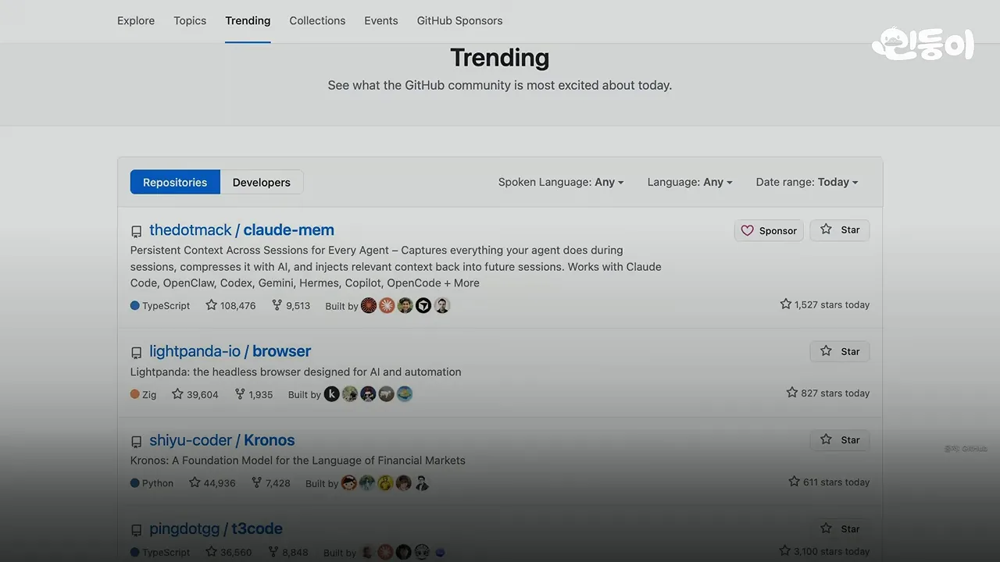
14개를 한 표에 모았어요. 저장소 이름은 영상 화면에 나온 주소를 따랐어요.
| 순위 | 이름 | 한 줄 설명 |
|---|---|---|
| 14 | Vorssaint Utils | 유료 맥 앱 기능을 메뉴 막대 하나에 모은 무료 앱 |
| 13 | DevOps Exercises | 서버·클라우드 면접 질문과 연습 과제 모음 |
| 12 | OpenMAIC | 주제만 넣으면 AI 선생님과 반 친구가 있는 수업 생성 |
| 11 | Orkas | 지휘관 AI가 목표를 작업 지도로 쪼개는 도구 |
| 10 | DeepTutor | 배울 순서를 짜고 복습까지 시키는 AI 튜터 |
| 9 | Lightpanda | AI 에이전트용으로 새로 만든 브라우저 |
| 8 | Superpowers | 코딩 에이전트에게 일하는 순서를 주는 스킬 모음 |
| 7 | Impeccable | AI가 만든 화면의 티 나는 패턴을 잡는 디자인 스킬 |
| 6 | OpenMausBot | 클로드 코드와 코덱스를 메신저 친구처럼 쓰는 앱 |
| 5 | ziwei-doushu | 자미두수 명반 계산 엔진과 미리 만든 풀이 데이터 |
| 4 | T3 Code | 여러 코딩 에이전트를 한 화면에서 쓰는 앱 |
| 3 | Claude Code Game Studios | 클로드 코드를 게임 회사처럼 꾸리는 템플릿 |
| 2 | Matt Pocock Skills | 계획을 캐묻는 그릴미로 유명한 스킬 모음 |
| 1 | claude-mem | 클로드 코드에 세션을 넘어서는 기억을 붙이는 도구 |
별 수를 나란히 놓으면 순위가 누적 별 순서가 아니라는 게 바로 보여요. 8위 Superpowers와 2위 Matt Pocock Skills가 30만 개를 넘는데, 1위 claude-mem은 10만 8천 개예요. 영상은 순위 기준을 따로 말하지 않아요. 다만 claude-mem은 오늘 받은 별이 가장 많다고 소개해요.
14~13위: 맥 유틸리티와 DevOps 문제집
14위 Vorssaint Utils — 유료 맥 앱 대신 아이콘 하나
맥에서 기능 하나 때문에 따로 사던 유료 앱들을 메뉴 막대 아이콘 하나에 모은 무료 앱이에요. 초록색으로 칠한 README 문장이 이 앱의 소개 전부예요. 유료 맥 앱 열두 개 몫을 한다는 말이고, 뒤 문장은 쓸 것만 깔라는 뜻이에요.
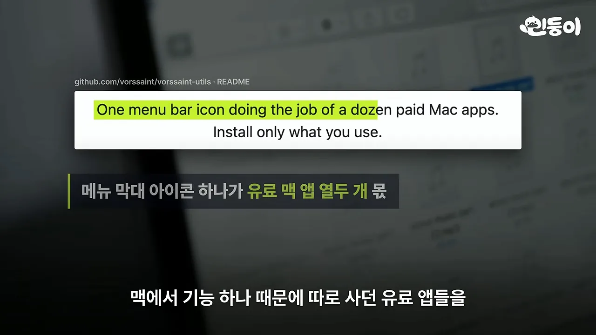
기능 중 오디오가 먼저 나와요. 앱마다 소리 크기를 따로 맞추고 100% 넘게 키울 수 있어요. 아래 화면처럼 스포티파이는 스피커로, 디스코드는 헤드셋으로 나눠 보낼 수도 있어요. 화살표 사이 손글씨가 짚는 대로 오디오 드라이버는 필요 없어요.
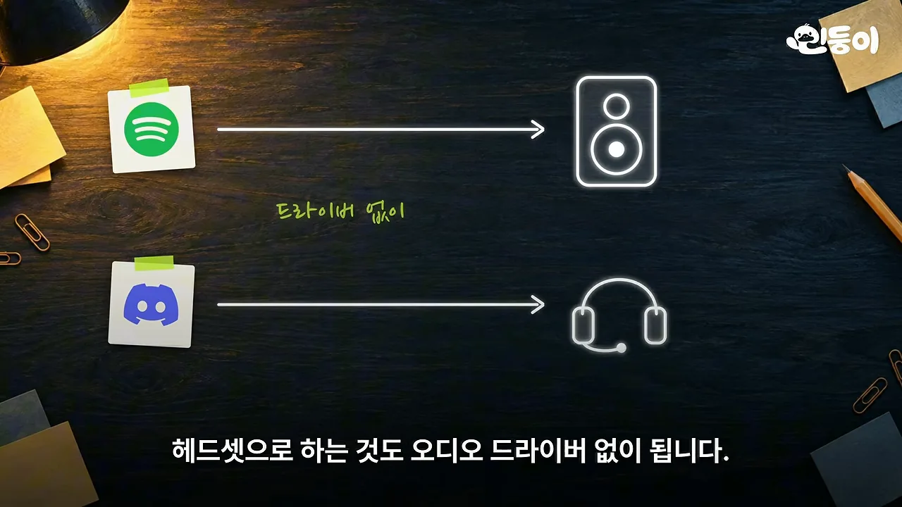
그 밖에 이런 기능이 들어 있어요.
- 단축키로 창을 화면 반쪽에 붙여요.
- 노트북 뚜껑을 닫아도 맥이 잠들지 않게 막아요.
- 복사 기록을 다시 꺼내 쓰고, 파일을 잠깐 올려 두는 선반도 있어요.
- 앱을 지울 때 남은 캐시까지 확인한 뒤 휴지통으로 보내요.
- 노치 없는 맥에 다이내믹 아일랜드를 띄우고, 클로드와 코덱스 사용량을 메뉴 막대에서 보여 줘요.
사용 기록이나 기기 정보를 보내지 않는다고 밝혔고, 애플 실리콘 맥의 macOS 14 이상에서 돌아가요. 6월에 나왔는데 내려받기가 100만 번을 넘었어요. 8월에 한 유튜버가 맥용 파워토이즈 대안이라며 소개한 영상이 98만 조회수를 찍으면서 입소문이 났어요.
13위 DevOps Exercises — 면접 대비용 문제집
서버와 클라우드를 다루는 엔지니어 면접에 나올 법한 질문을 모은 저장소예요. 화면의 막대가 주제별 질문 수를 보여 줘요. 가장 긴 AWS(Amazon Web Services)가 440개가 넘고, 쿠버네티스와 리눅스, 테라폼이 뒤를 이어요.
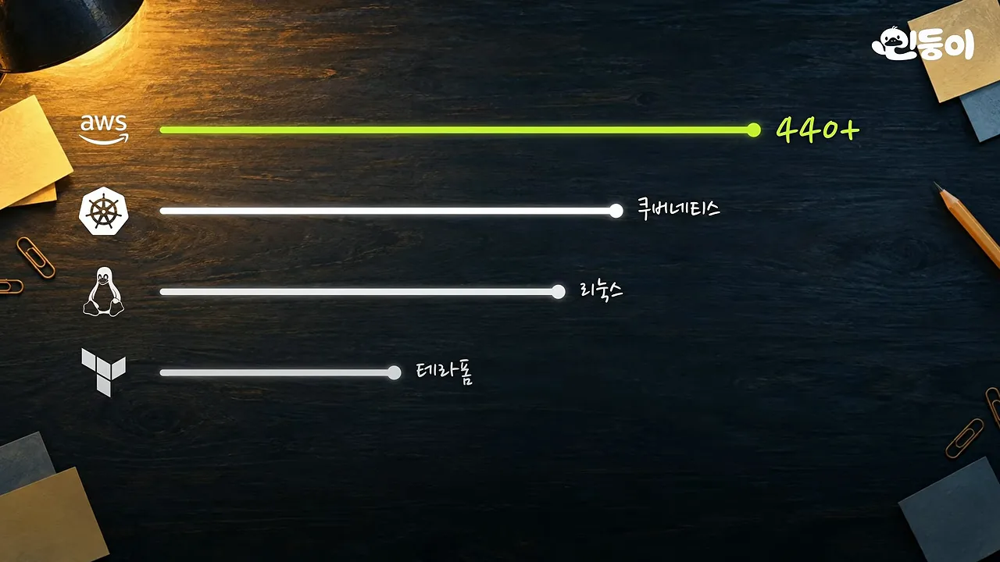
'주소창에 URL을 치면 무슨 일이 일어나나'처럼 단골 질문부터 '시스템이 느리다는 말을 들으면 뭘 먼저 확인할까' 같은 실무 질문까지 있어요. 질문을 누르면 답이 펼쳐져요. 연습 과제는 지시문과 정답 파일이 짝지어 있어요. 아래 과제는 nginx 같은 이미지를 골라 파드를 띄우고 돌아가는지 확인하라는 지시문이에요. 풀고 나서 정답 명령어 한 줄과 맞춰 볼 수 있어요.
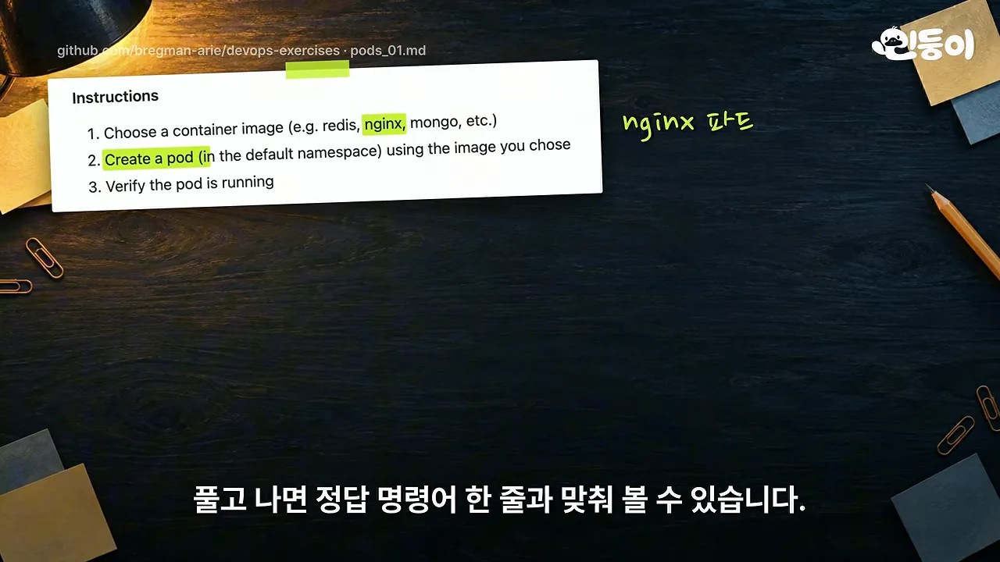
random_question.py 스크립트도 들어 있어요. 영상 01:40에서 보기2020년에 1,035개였던 질문이 두 배 반으로 늘었는데, 약 13%는 아직 답이 비어 있어요. 사진 속 Arie Bregman은 레드햇에서 일하던 엔지니어예요. 그는 이 질문이 면접에 그대로 나올 거라 기대하지 말고 공부용으로 쓰라고 적어 뒀어요.
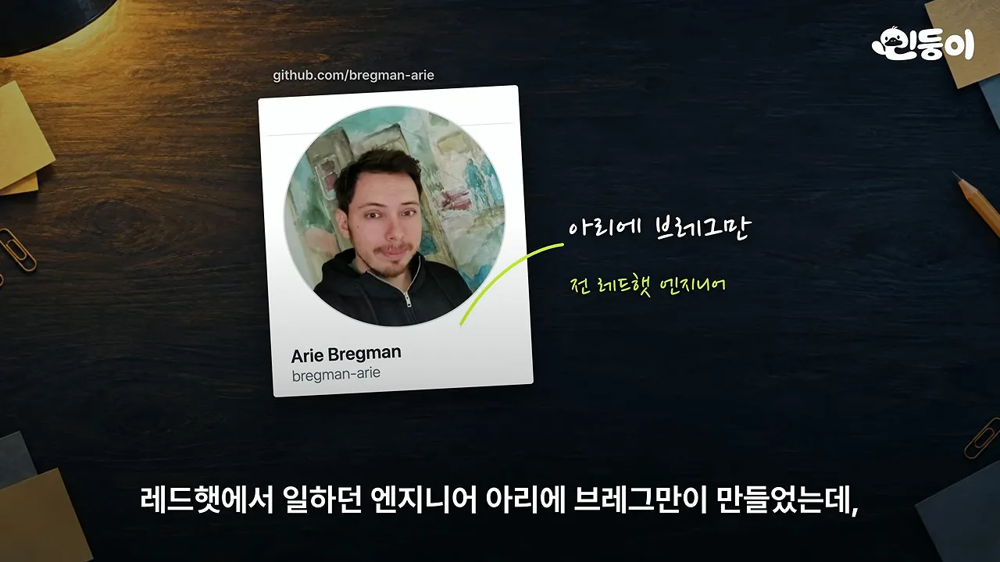
12~10위: AI 교실, 작업 지도, AI 튜터
12위 OpenMAIC — 주제 하나로 만드는 교실
주제 하나만 넣으면 AI 선생님과 AI 반 친구들이 있는 수업을 통째로 만들어요. 화면 왼쪽 아래 동그라미가 AI 선생님이고, 오른쪽 채팅 칸에서 반 친구들이 말을 주고받아요.
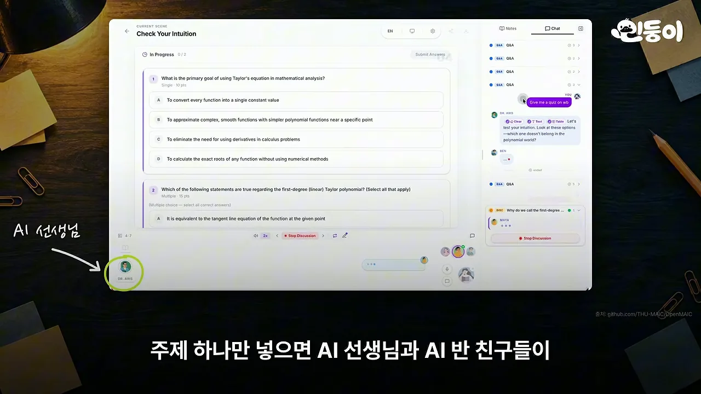
'30분 안에 파이썬을 처음부터 가르쳐 줘'라고 쓰거나 PDF(Portable Document Format), PPT(PowerPoint), 영상을 올리면 돼요. 바로 수업이 나오지 않고 고칠 수 있는 목차가 먼저 나와요. 아래 메모에서 3번 '반복문'을 그어 '반복문 + 실습'으로 고친 게 그 단계예요. 그다음 오른쪽처럼 수업 장면이 만들어져요.
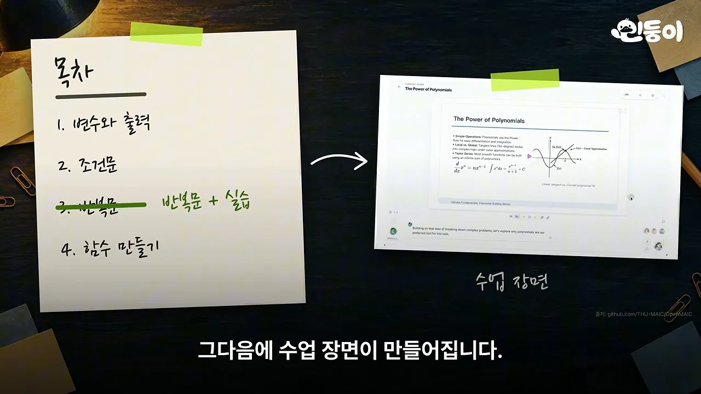
수업에는 선생님이 목소리로 설명하며 레이저 포인터로 짚는 슬라이드, 바로 채점되는 퀴즈, 시뮬레이션, 실시간 칠판, 반 친구와의 토론이 들어가요. 3D나 게임, 마인드맵, 코딩 실습으로 만들 수도 있어요. 칭화대 연구팀의 작업으로, 처음에는 학생 500명 넘게 석 달 넘게 이 교실로 실제 강의를 들은 연구였어요. 학생들이 한 행동의 61%가 질문이었다고 해요. 반에는 분위기를 띄우는 친구, 깊이 생각하는 친구, 필기하는 친구, 질문 많은 친구가 앉아 있어요.
만든 수업은 내보낼 수 있어요. 화면 README가 .pptx와 오프라인 .html을 짚고, 영상은 MP4(MPEG-4 Part 14)도 된다고 말해요.
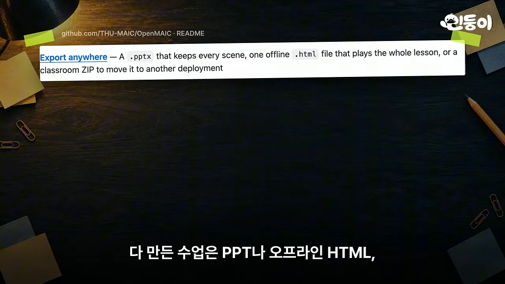
@로 불러 써요. 영상 03:04에서 보기8월까지 154개 나라에서 만든 수업이 100만 개를 넘었어요. 키 없이 내 컴퓨터의 로컬 모델로 돌릴 수도 있어요.
11위 Orkas — 계획은 대본이 아니라 지도
목표 하나를 주면 지휘관 AI가 일을 서로 이어진 작업 지도로 쪼개고, 작업마다 에이전트를 붙여요. 아래 그림의 깃발이 목표이고, 동그라미가 작업, 선이 작업 사이의 연결이에요. 계획은 대본이 아니라 지도라는 게 이 도구의 생각이에요.
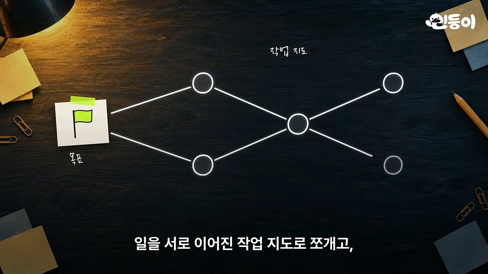
README의 초록색 줄이 말하는 대로, 이미 깔아 둔 클로드 코드나 코덱스를 그대로 일꾼으로 써요. 제목 줄에는 OpenCode, OpenClaw, Hermes-Agent도 함께 나와요. 영상을 만드는 작업 공간이 따로 있고 한국어 화면도 지원해요.
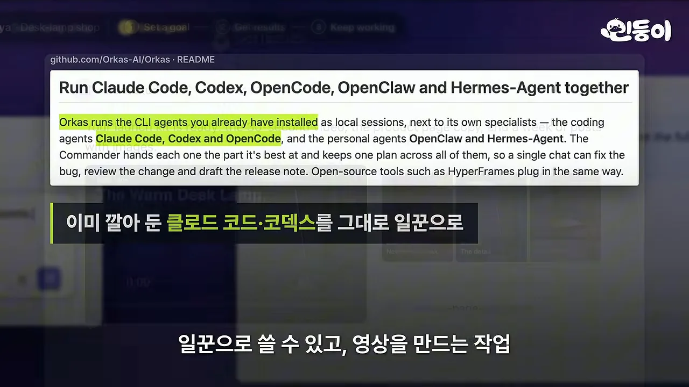
10위 DeepTutor — 순서와 복습을 짜 주는 튜터
공부할 내용을 넣으면 배울 순서를 지도로 짜고, 한 단계를 제대로 익혀야 다음 단계로 넘어가게 해요. 아래 왼쪽 곡선이 기억이 떨어지는 모습이고, 떨어질 때쯤 복습 지점이 찍혀 다시 올라가요. 오른쪽 메모는 튜터가 쌓아 두는 기억으로, 내가 아는 것과 헷갈리는 것이 나뉘어 있어요.
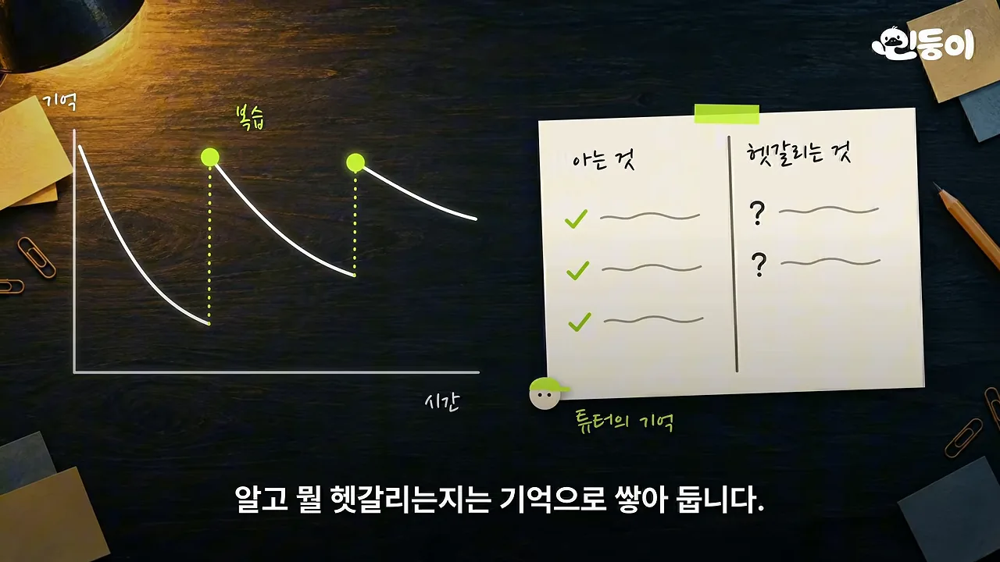
설명을 영상으로 보고 싶으면 AI가 영상 코드를 직접 짜서 강의 영상을 만들어요. 화면이 겹치면 최대 네 번까지 스스로 고치고, 내레이션은 무료 음성으로 입혀요. 이번 주 나온 1.7 버전 릴리스 노트에 그 기능이 'narrated video lessons'로 적혀 있어요.
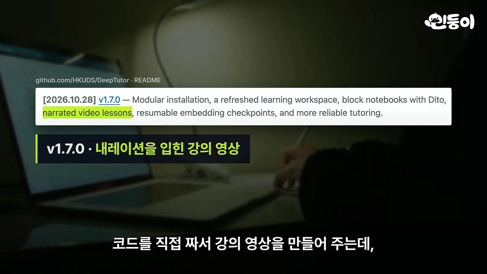
9~7위: 에이전트용 브라우저와 스킬 두 개
9위 Lightpanda — 화면을 안 그리는 브라우저
사람이 아니라 AI가 쓰는 걸 전제로 처음부터 새로 만든 헤드리스 브라우저예요. AI 에이전트는 글을 읽고 버튼을 누르면 되니까 화면을 예쁘게 그릴 필요가 없어요. 그래서 크롬을 고쳐 쓰지 않고 Zig로 새로 짜면서 화면을 그리는 부분을 뺐어요. 아래 README도 Chromium 포크도, WebKit 패치도 아니라고 밝혀요.
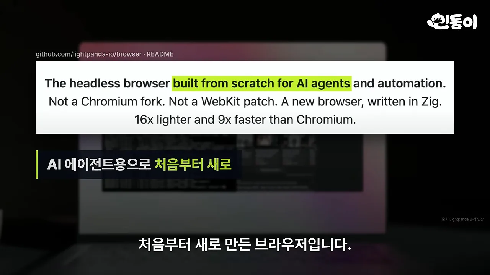
공식 벤치마크 그림을 보면 차이가 커요. 같은 페이지 묶음을 도는 데 크롬은 큰 원의 2GB와 46초, Lightpanda는 작은 초록 원의 123MB와 5초예요.
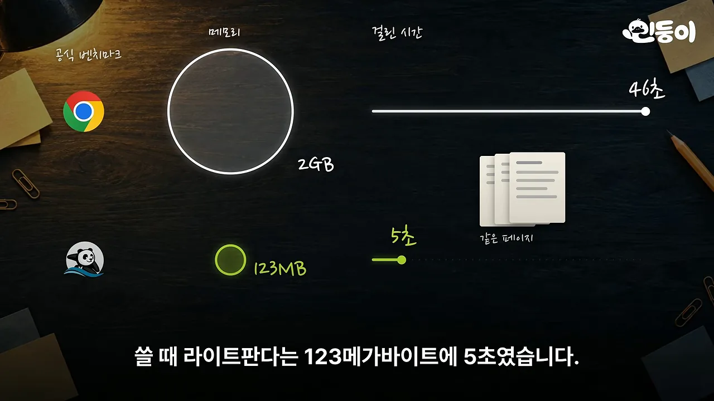
명령 한 줄로 웹페이지를 마크다운으로 바꿔 AI가 읽기 좋게 만들어요. 아래 화면 위쪽의 --dump markdown이 그 옵션이에요. 할 일을 글로 주면 직접 웹을 돌아다니기도 해요.
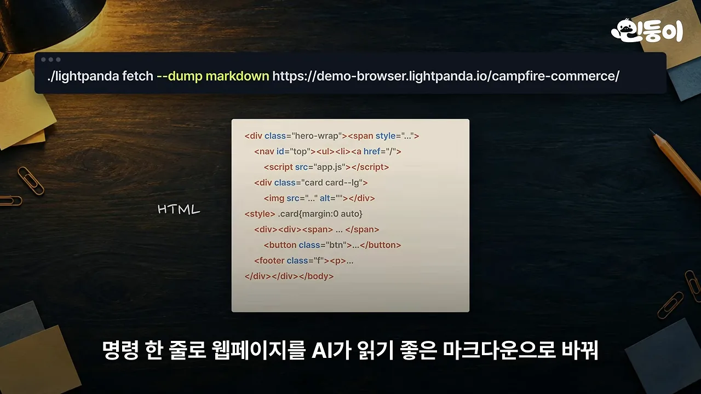
영상이 꼽은 재미있는 점은 재생이에요. AI가 한 번 해낸 과정을 스크립트로 저장하면 다음부터는 AI 호출 없이, 토큰도 쓰지 않고 똑같이 돌려요. 비밀번호는 자리 표시로만 남아 AI에게 넘어가지 않아요. 기존 코드도 그대로 쓸 수 있어요. 아래 코드처럼 Puppeteer나 Playwright의 접속 주소만 바꾸면 되고, 클로드 코드에는 MCP(Model Context Protocol) 명령 한 줄로 붙어요.
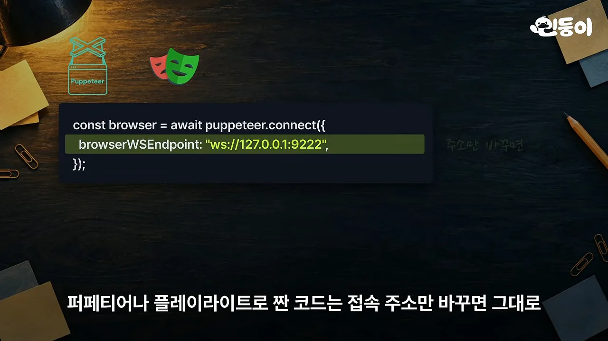
browserWSEndpoint 한 줄이에요. 영상 05:20에서 보기만든 사람들은 원래 하루 2천만 페이지를 긁어 오던 회사였어요. 크롬 서버 비용이 1년 매출의 15%까지 나가자 직접 만들기로 했어요. 2년 동안 커밋 1만 번을 쌓아 지난달 1.0을 내면서 베타를 벗었어요. 다만 사이트 호환성은 아직 크롬의 80% 정도라고 스스로 밝혀요.
8위 Superpowers — 일하는 순서를 주는 스킬
오래전부터 꾸준히 인기를 끌어 온 코딩 에이전트 스킬 모음이에요. 에이전트 스킬은 코드부터 바로 짜지 않게 만들어요. 그림 왼쪽부터 아이디어 다듬기, 계획, 테스트, 리뷰 순서대로 일이 흘러가요.
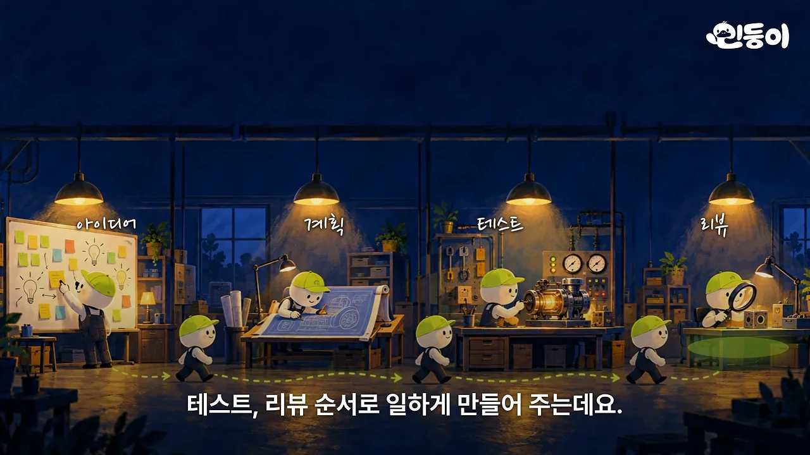
7위 Impeccable — AI 티를 잡는 검사기
AI한테 웹페이지를 맡기면 늘 비슷한 결과가 나와요. README의 초록 강조 부분이 그 목록이에요. 늘 같은 글꼴(Inter), 보라에서 파랑으로 가는 그라데이션, 카드 안의 카드예요.
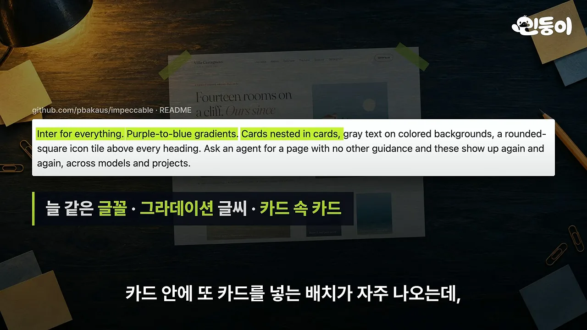
검사기가 AI 모델 없이 돌아가는 게 특징이에요. 다음 화면은 결정론적 규칙 62개로 이런 패턴을 찾고, LLM(Large Language Model)도 API(Application Programming Interface) 키도 필요 없다고 적어요. 걸리면 자동 검사에서 실패로 처리해 배포 전에 걸러낼 수 있어요.
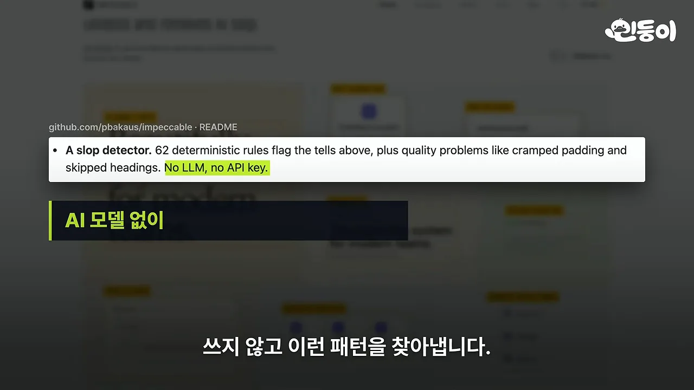
슬래시 명령으로 다듬기나 비평을 시키면 에이전트가 디자인을 직접 고쳐요. 지난주 나온 4.8 버전 릴리스의 'Findings on the pull request' 항목처럼, 이제 PR(Pull Request)에 바로 코멘트도 남겨요.
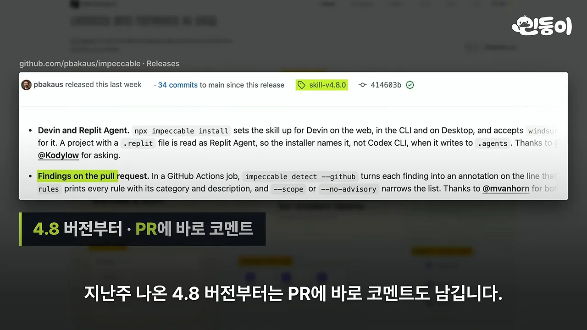
6~4위: 메신저 앱, 점술 데이터, 통합 화면
6위 OpenMausBot — 코딩 에이전트와 메신저로
내 컴퓨터의 클로드 코드나 코덱스를 메신저 친구처럼 쓰게 하는 앱이에요. 화면 왼쪽에 Brody, GitScout, Emily, Omii 같은 봇 목록이 있고, 봇마다 대화방이 있어서 채팅하듯 일을 시켜요. 봇이 파일을 고치거나 명령을 돌리기 전에는 허락할지 묻는 카드가 떠요.
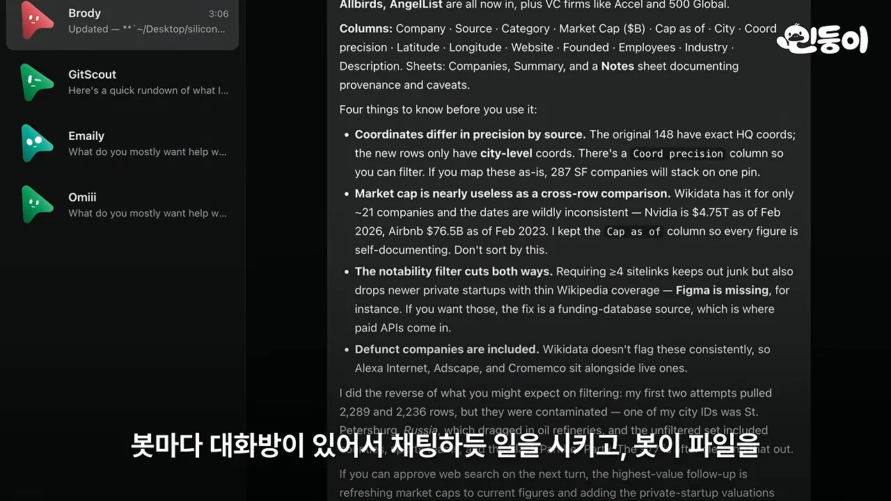
한쪽 사용량이 다 떨어지면 다른 AI로 알아서 갈아타요. 사흘 전 v0.1.134 릴리스 노트의 아래쪽 줄이 한국어 추가예요. 윗줄도 눈여겨볼 만해요. 봇이 마친 작업 단계를 저장해 두고, 다음에 같은 일을 시키면 AI 사용 없이 몇 초 만에 돌려요. 단계가 실패하면 평소 방식으로 돌아가요.
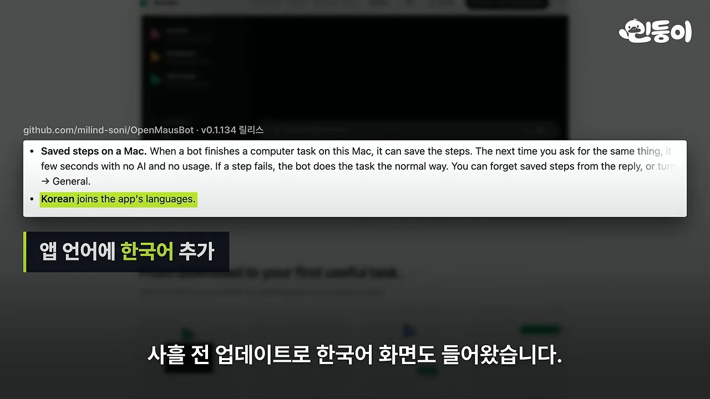
5위 ziwei-doushu — 풀이를 통째로 뽑아 둔 점술 데이터
자미두수는 동양 점술의 하나예요. 이 프로젝트는 명반을 계산하는 엔진과 미리 만든 풀이 데이터를 공개했어요. 1950년부터 올해까지 태어난 날과 시각으로 나올 수 있는 명반을 전부 뽑고, 13가지 풀이를 붙였어요. 아래 막대그래프 왼쪽 글자 열이 그 13가지 항목이에요.
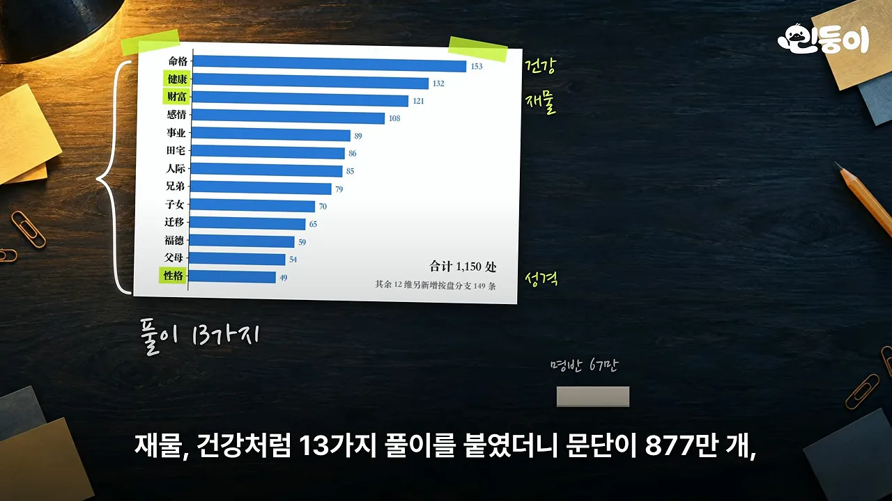
README 줄에 계산이 그대로 있어요. 명반 674,976개 × 13가지로 문단 8,774,688개가 나왔고, 초록색으로 표시한 부분이 크기예요. 풀면 56.6GB인데 압축하면 161MB예요. 정해진 규칙으로 만든 풀이라서 AI가 그때그때 지어내지 않아요. 같은 생년월일시면 언제나 같은 풀이가 나와요.
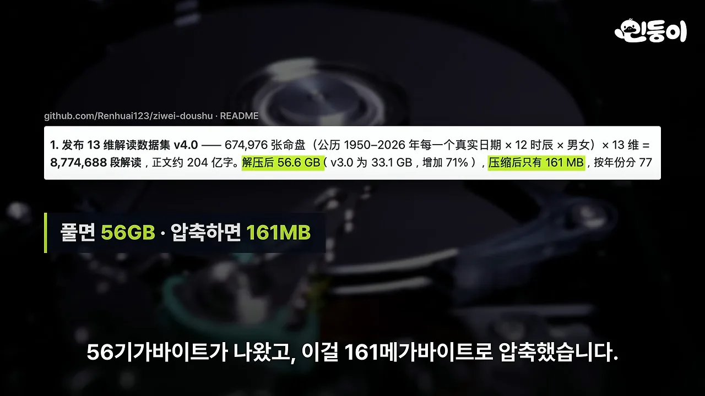
4위 T3 Code — 에이전트를 한 화면에
클로드 코드나 코덱스 같은 코딩 에이전트를 한 화면에서 쓰게 하는 앱이에요. 지금 쓰는 구독을 그대로 연결하고, 키를 되파는 일은 없다고 README에 못 박았어요.
"Wait, what are you selling me?" Nothing.
"잠깐, 뭘 팔려는 건가요?" 아무것도요.
— README, 영상 07:53 부근 화면
대화마다 작업 공간이 따로 생겨요. 아래 화면 터미널의 ~/.t3/worktrees/… 경로가 그 흔적으로, 대화마다 워크트리를 하나씩 쓰는 모습이에요. 그래서 여러 일을 한꺼번에 시켜도 서로 엉키지 않아요.
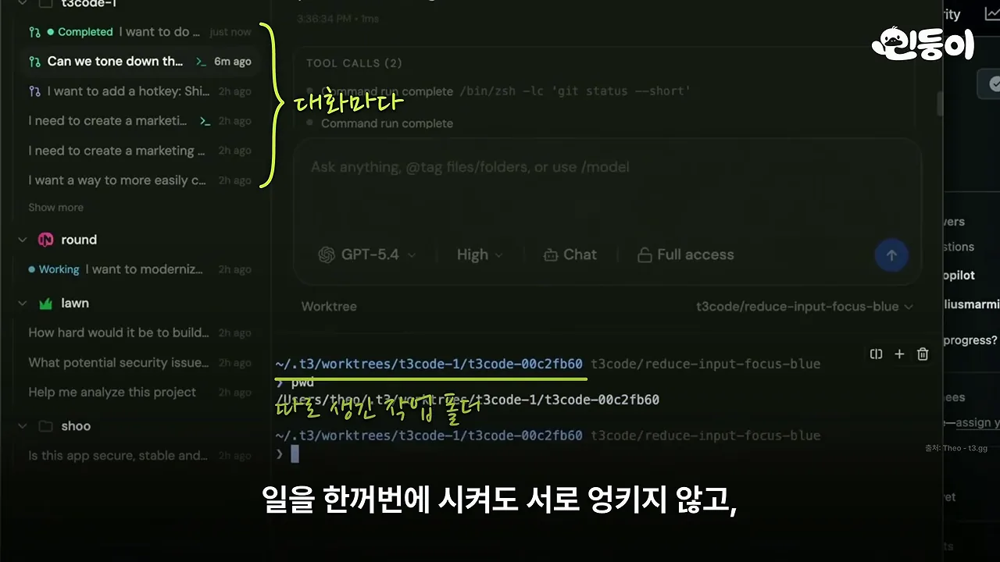
바뀐 코드를 확인하면 오른쪽 위 Commit & push 버튼 하나로 PR을 올려요. 휴대폰 앱으로 이어서 볼 수도 있어요.
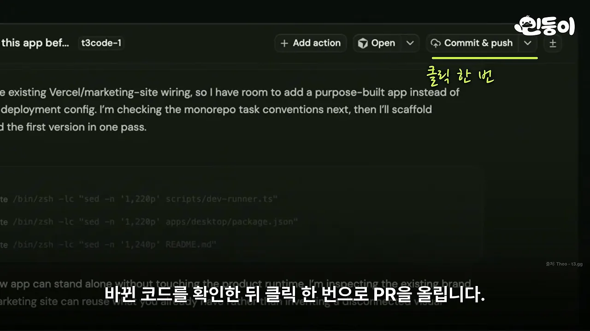
3~1위: 게임 스튜디오, 그릴링, 기억
3위 Claude Code Game Studios — 에이전트 49개짜리 게임 회사
클로드 코드를 게임 회사처럼 꾸리는 템플릿이에요. 아래 조직도의 맨 위 동그라미 셋이 감독이고, 그 아래가 부서장, 맨 아래 줄이 엔진별 전문가예요. 다 합쳐 에이전트 49개이고, 감독은 Opus, 전문가는 Sonnet처럼 직급마다 모델을 나눴어요.
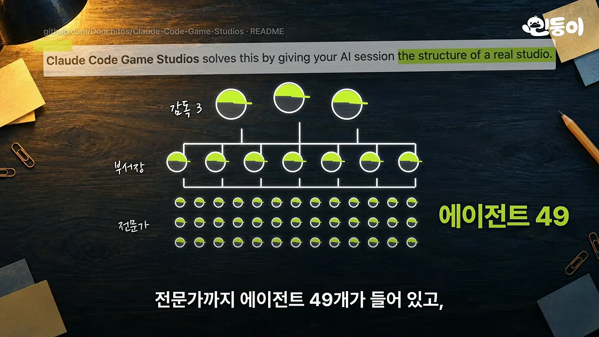
시작 명령을 치면 아이디어가 아직 없는지, 설계가 이미 있는지부터 물어요. 기획부터 개발 일정까지 단계별로 끌고 가지만, 내가 승인하기 전에는 파일을 쓰지 않아요. 화면이 바뀌는 작업은 게임을 실제로 켜서 스크린샷을 남겨야 끝난 걸로 쳐요.
영상이 흥미롭다고 꼽는 건 만든 사람의 실험이에요. 표의 초록 줄이 문서 30개, 58분을 쓴 standard 모드이고, 위 줄의 minimal은 한 장짜리 기획서로 바로 시작했어요. 블라인드 평가에서 초록 줄이 꼴찌였어요.
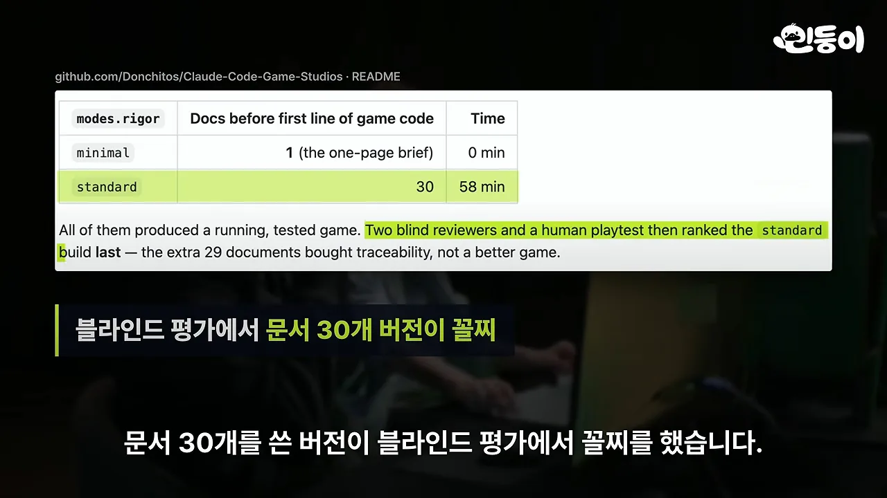
2위 Matt Pocock Skills — 캐묻고, 쪼개고, 섞이지 않게
AI가 일을 시작하기 전에 계획을 하나하나 캐묻는 그릴미로 유명한 스킬 모음이에요. 터미널의 Skill(grilling) 줄이 그 스킬을 불러온 순간이에요. 질문하기 전에 코드베이스부터 읽는 모습이 그 아래로 이어져요.
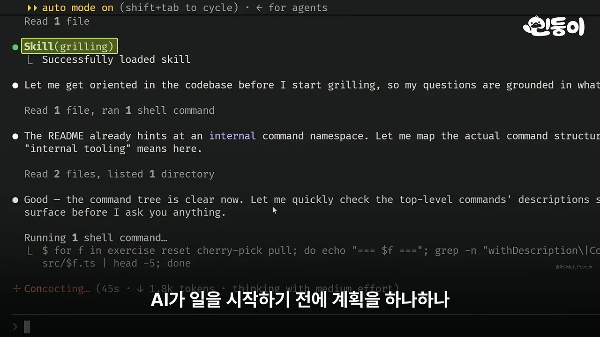
사흘 전 업데이트의 변화는 오른쪽 그림이에요. 왼쪽 다섯 단계 중 to-tickets로 나눈 작업 티켓 1, 2, 3마다 새 서브 에이전트가 붙어요. 그래서 맥락이 서로 섞이지 않아요.
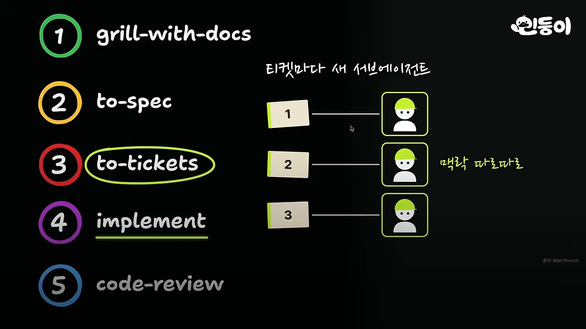
1위 claude-mem — 세션을 넘어서는 기억과 그 대가
오늘 하루에만 별을 1,700개 넘게 받아 오늘 받은 별이 가장 많아요. 클로드 코드는 세션을 새로 열면 지난 작업을 기억하지 못해요. claude-mem을 깔아 두면 작업하는 동안 클로드가 쓴 도구 기록을 모아 요약하고, 다음 세션을 열 때 최근 세션 열 개의 맥락을 넣어 줘요. 따로 기록하라고 시킬 필요도 없어요.
필요한 기억만 꺼내는 흐름은 아래 README에 있어요. 먼저 search로 결과의 목록만 받고, 필요한 ID(Identifier)의 상세만 가져와요. 마지막 줄의 '~10x token savings'가 토큰을 열 배 아낀다는 말인데, 영상은 이 수치를 만든 쪽의 주장으로 전해요.
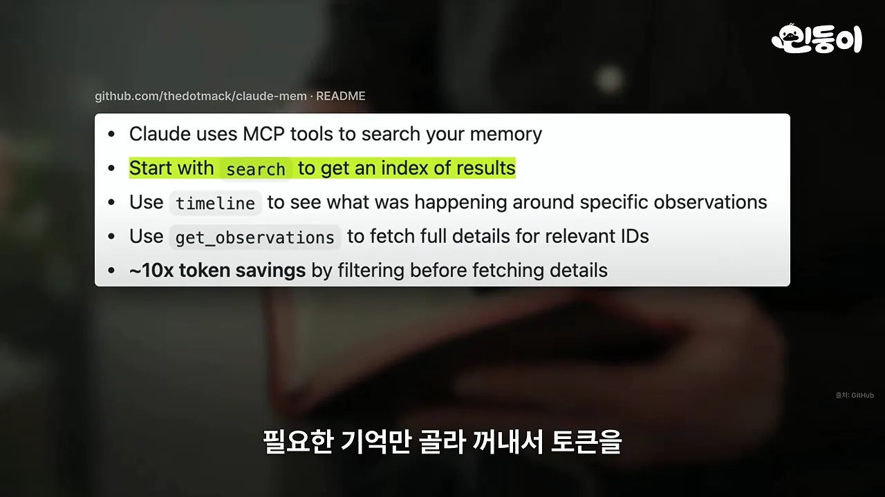
영상은 쓰기 전에 알아 둘 점도 짚어요. 사흘 전 올라온 이슈 #5176의 제목이 화면에 나와요. 15.2 버전부터 설치 화면이 뜨자마자 지난 30일 동안의 프롬프트가 claude-mem 서버로 올라간다는 문제 제기예요. 초록색 'Open' 표시 옆에 수정 PR #5220이 보이는데, 영상 시점에는 아직 반영되지 않았어요.
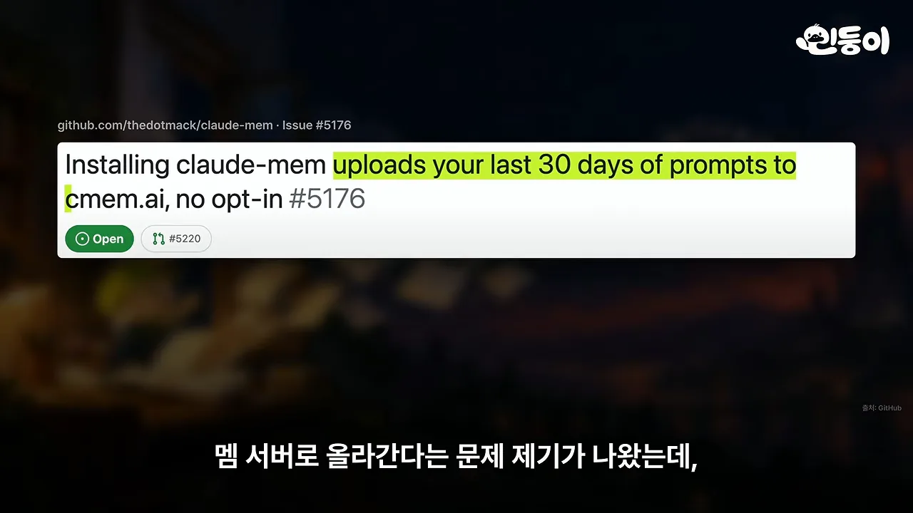
위쪽을 차지한 도구들의 공통점
영상은 AI 에이전트를 팀처럼 나눠 부리고, 기억하게 하고, 일하는 순서까지 가르치는 도구들이 위쪽을 차지했다고 마무리해요. 화면에는 그 예로 Claude-Code-Game-Studios, claude-mem, superpowers 세 저장소 이름표가 붙어 있어요.
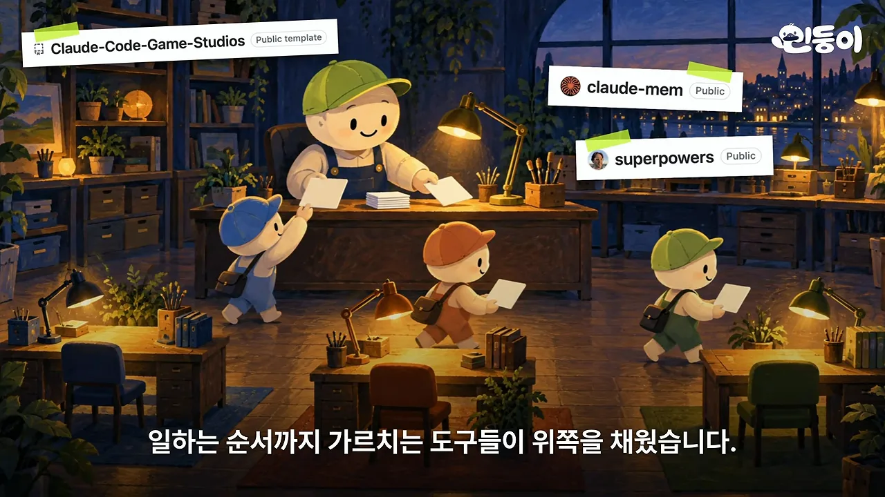
이 세 갈래에 다른 도구까지 넣으면 아래처럼 묶여요. 분류는 영상의 도구 설명을 보고 이 문서에서 묶은 거예요.